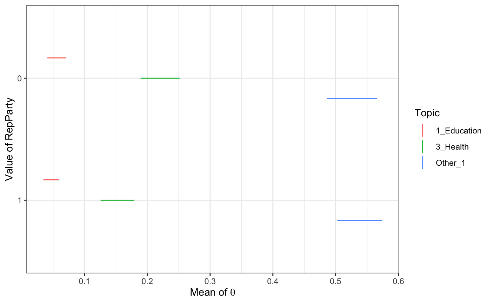

out <- keyATM(
docs = keyATM_docs, # text input
no_keyword_topics = 3, # number of topics without keywords
keywords = bills_keywords, # keywords
model = "base", # base, covariates, or dynamic
options = list(seed = 100),
keep = c("Z", "S") # You need to keep `Z` and `S`
)We have a binary variable of the party ID of bill’s proposer. 0 indicates Democrat and 1 indicates Republican.
table(bills_cov[, "RepParty"])##
## 0 1
## 57 83by_strata_TopicWord() function calculates topic-word distribution subsetted by a vector provided.
RepParty <- as.vector(bills_cov[, "RepParty"]) # the length should be the same as the number of documents
strata_tw <- by_strata_TopicWord(out, keyATM_docs, by = RepParty)You can get top words with top_words().
top_words(strata_tw, n = 5)## $`0`
## 1_Education 2_Law 3_Health 4_Drug Other_1
## 1 loan law [✓] program [✓] section corporation
## 2 child [✓] state health [✓] shall frequency
## 3 education [✓] attorney [✓] public [✓] act public [3]
## 4 program [3] juvenile grant state commission
## 5 abuse crime care subsection wildlife
## Other_2 Other_3
## 1 safety research
## 2 entity center
## 3 product national
## 4 work project
## 5 information secretary
##
## $`1`
## 1_Education 2_Law 3_Health 4_Drug Other_1 Other_2
## 1 school state public [✓] section wildlife information
## 2 child [✓] law [✓] health [✓] shall refuge security
## 3 education [✓] court [✓] grant act commission entity
## 4 loan action program [✓] state fish system
## 5 charter person system subsection unit protect
## Other_3
## 1 national
## 2 research
## 3 fund
## 4 project
## 5 program [3]As long as the length is the same as the number of documents, you can use a character vector for by argument argument.
RepParty_chr <- ifelse(bills_cov[, "RepParty"] == 0, "Democrat", "Republican")
strata_tw_chr <- by_strata_TopicWord(out, keyATM_docs, RepParty_chr)
top_words(strata_tw_chr, n = 3)## $Democrat
## 1_Education 2_Law 3_Health 4_Drug Other_1 Other_2
## 1 loan law [✓] program [✓] section corporation safety
## 2 child [✓] state health [✓] shall frequency entity
## 3 education [✓] attorney [✓] public [✓] act public [3] product
## Other_3
## 1 research
## 2 center
## 3 national
##
## $Republican
## 1_Education 2_Law 3_Health 4_Drug Other_1 Other_2
## 1 school state public [✓] section wildlife information
## 2 child [✓] law [✓] health [✓] shall refuge security
## 3 education [✓] court [✓] grant act commission entity
## Other_3
## 1 national
## 2 research
## 3 fundWith keyATM covariates, we can calculate the predicted posterior distribution of the document-topic distributions.
out <- keyATM(
docs = keyATM_docs, # text input
no_keyword_topics = 3, # number of topics without keywords
keywords = bills_keywords, # keywords
model = "covariates", # select the model
model_settings = list(covariates_data = bills_cov,
covariates_formula = ~ RepParty),
options = list(seed = 100)
)Now let’s calculate the mean of theta for two different values of RepParty. The figure shows 90% credible intervals.
strata_topic <- by_strata_DocTopic(out, by_name = "RepParty", by_values = c(0,1))
plot(strata_topic, topics = c(1,3,5))